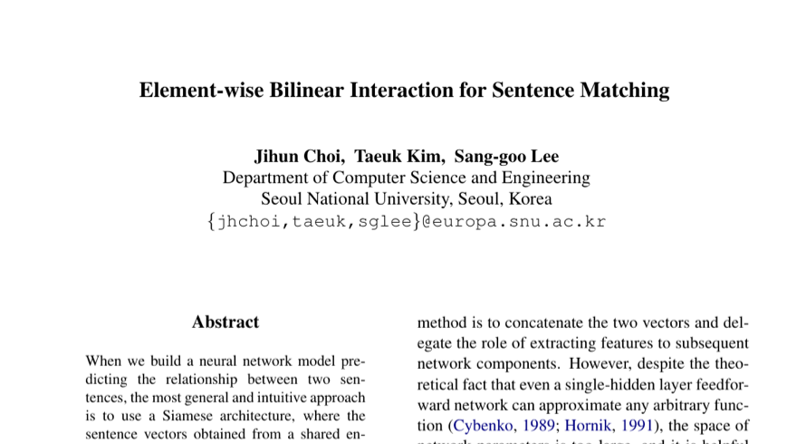

Element-wise Bilinear Interaction for Sentence Matching
*SEM 2018
Jihun Choi, Taeuk Kim, Sang-goo Lee
One-Line Summary
A sentence matching method using element-wise bilinear interaction

Figure 1. Element-wise bilinear interaction for sentence matching, proposing an efficient interaction mechanism between sentence pair representations.
Background
Sentence matching — determining the semantic relationship between two sentences — is a core task underlying natural language inference, paraphrase detection, and question answering. Standard approaches either encode each sentence independently and compare the resulting vectors, or build complex cross-attention networks that are computationally expensive. A middle ground is needed: an interaction mechanism that captures fine-grained relationships between sentence representations while remaining parameter-efficient and easy to integrate into existing architectures.
Method
Element-wise bilinear interaction: Instead of computing a full bilinear product (which requires a large weight tensor), the paper proposes an element-wise bilinear function that models interactions between corresponding dimensions of two sentence vectors. This dramatically reduces the number of parameters from O(d3) to O(d) while retaining expressive power.
Factored interaction design: The interaction is factored so that each dimension of the sentence embeddings interacts through a small, learnable bilinear form, enabling the model to capture multiplicative relationships that simple dot products or concatenation-based methods miss.
Lightweight integration: The proposed interaction layer can be inserted into any sentence-encoding pipeline as a drop-in matching component, requiring no architectural changes to the upstream encoder.
Results
Strong performance on NLI: On the SNLI benchmark, the element-wise bilinear model achieves competitive accuracy with significantly fewer parameters than full bilinear or attention-heavy baselines.
Effective on multiple tasks: The method shows consistent improvements on sentence matching tasks including paraphrase identification and semantic textual similarity, confirming its generality.
Efficiency gains: The element-wise formulation provides a favorable accuracy-to-parameter ratio, making it practical for resource-constrained settings.
Why It Matters
This work demonstrates that sophisticated sentence-pair interactions do not require heavyweight architectures. By distilling the bilinear interaction down to an element-wise operation, the paper provides a practical and efficient building block for sentence matching. The approach influenced subsequent work on lightweight interaction mechanisms and remains relevant as a design principle: capturing multiplicative cross-sentence signals is important, but can be done with far fewer parameters than typically assumed.